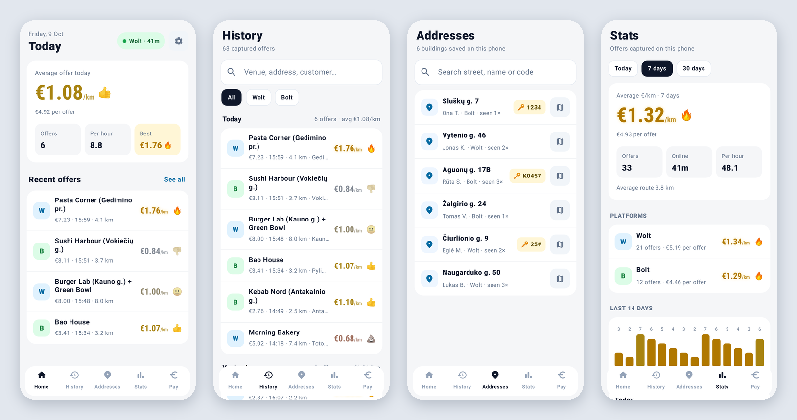

Work smarter.
Not longer.
A €5 delivery can be a poor deal when it takes you 15 km. CourierPilot helps Wolt Partner and Bolt Food couriers compare payout and distance before deciding. Install the Android APK, enable capture, and review offers in your private history. The app also supports advanced route estimates and local market comparisons.
Android 11+. No account or server setup needed for normal offer capture. Optional route-verified scoring requires a protected Valhalla endpoint and private token. Unofficial app, not affiliated with Wolt or Bolt.

Better decisions from the offers you actually see
Route-aware offer rate
See a provisional rate when the courier app provides payout and distance. With an optional configured Valhalla service, calculate a walking/cycling route for a separate verified comparison.
Personal & city trends
Review historical offers, medians and confidence-aware market comparisons when eligible observations exist. No invented averages.
Private offer archive
Keep priced-offer history, proof screenshots and address notes on your phone. Optional sharing and routing are separate decisions.
Get started
Install
Get the signed APK from the official GitHub release. Requires Android 11 or newer.
Grant access deliberately
Enable notification and accessibility capture after reviewing the privacy guide.
Analyze, then decide
Read priced offers and provisional €/km where distance is available. Configure advanced routing only if you need it.
Read the setup guide · Market methodology · Privacy & permissions
Questions couriers ask
Is CourierPilot free?
The Android app and source code are available without a subscription under an MIT licence. It needs Android 11 or newer. Advanced route calculations need a Valhalla service and a private token; there is no shared public routing key in the APK.
Does it work without a server?
Yes. Once Android's notification and accessibility permissions are enabled, CourierPilot can capture priced offers and show a provisional €/km rate when Wolt or Bolt supplies distance. Route-verified rates and their market comparisons require optional Valhalla setup. The app labels estimates and unavailable data.
Does it automatically accept high-paying deliveries?
No. CourierPilot helps you judge the distance and payout yourself. A large payout can still be poor value if the route is long or involves extra stops.
Which courier apps are supported?
CourierPilot targets Wolt Partner and Bolt Food on Android. Compatibility depends on their current screen layouts, the country and your Android device. Check the field-test matrix and share redacted reports when something fails.
What data leaves my phone?
Offer records, delivery notes and access codes are stored locally. Enabling route calculations sends ordered coordinates to your configured HTTPS routing gateway. Remote diagnostics and market-data sharing have separate opt-in settings. Read the full privacy guide before enabling them.
Designed for courier judgement
No auto-accept. No magical profit promise. A higher €/km offer can still have poor net hourly earnings once waiting, unpaid return trips and vehicle costs are considered. The app shows measured evidence, confidence and uncertainty; you choose which orders make sense.